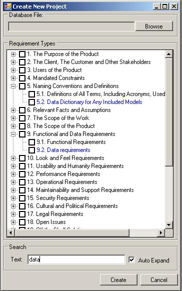

To create a new project:
1. Click File -> New
Project
2. Click Browse to select a destination for your database file. If you select an already existing
database file, it will be replaced with a new blank database.
3. Manually select the requirement types you are interested in. This selection can be changed
later via Types Manager. Use Search box to find types by name.
4. Click Create to save a new blank database to your selected location.
